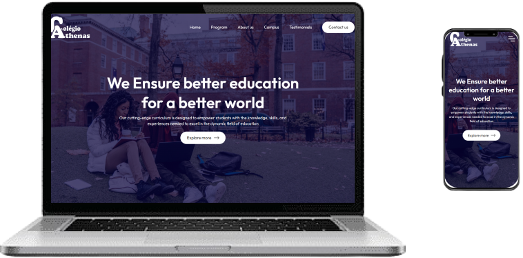
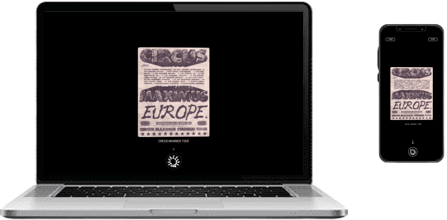
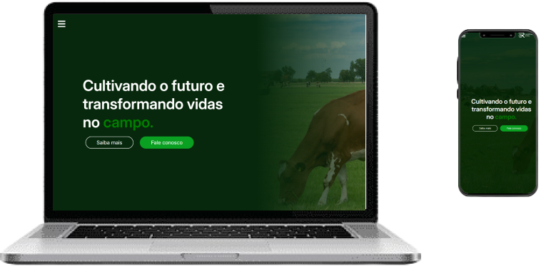
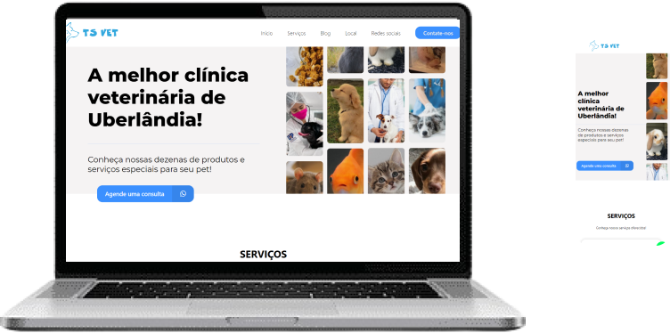
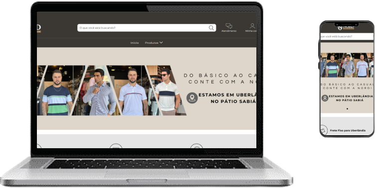

Take a look at my portfolio

Athenas
A website with a contact form based on my childhood school called
Athenas.

Travis Scott
This website is based on the artist Travis Scott, with a shop and a
main page.

Oportunidade Rural
Oportunidade Rural is a website for the sale, advertisement and
auction of rural lots

TS Vet
This landing page was made for TS Vet, a veterinary clinic, here we
focus on attracting customers to WhatsApp.

Nord Menswear
Nord Menswear is a male clothing store based website